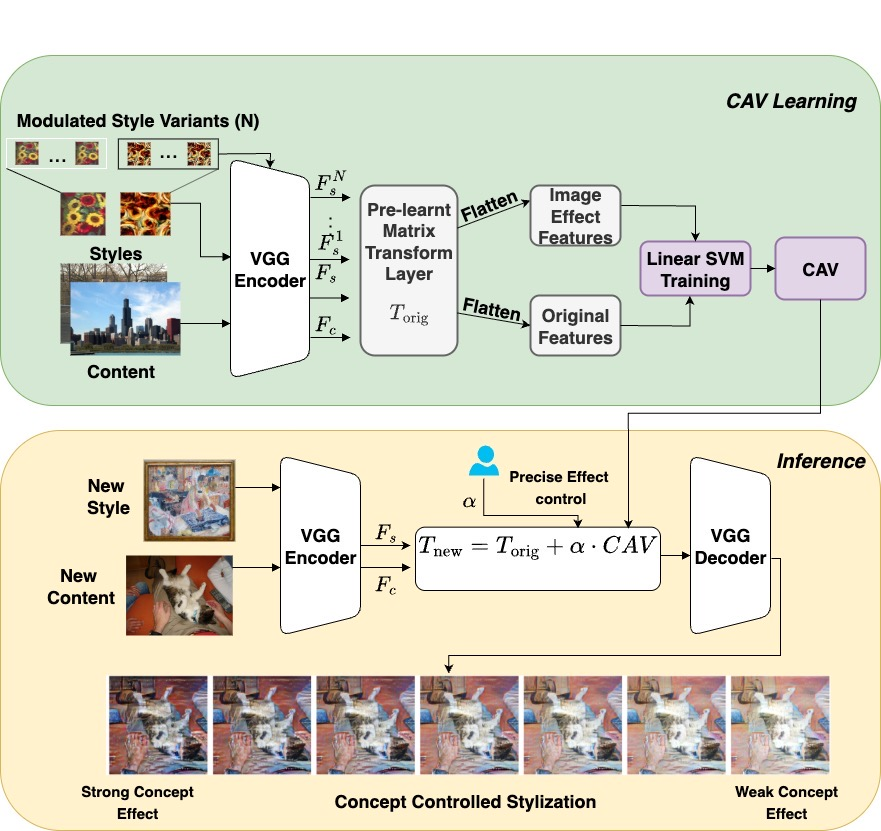

A concept-driven formulation for neural style transfer that maps perceptual style attributes (blur, texture, edges, contrast) to explicit Concept Activation Vector directions in transformation space
Abstract
Neural Style Transfer (NST) traditionally applies a fixed style to a target image, offering limited control over its degree, progression, or variations. Recent methods have introduced various control mechanisms like spatial attention, entropy regularization, and latent space manipulation. However, these approaches lack interpretable, human-understandable controls for fine-grained stylistic control as intermediate stylization is typically achieved by adjusting content and style losses. Other works explore interpolation across feature layers, but they operate through abstract parameters that require domain expertise and often lack intuitive control, as the relationship between parameters and stylization remains unclear due to the black-box nature of the architecture. In this paper, we introduce CAV Styler, a human-interpretable style transfer approach. We exploit human interpretable concepts such as textures, blurs, and style details to enable fine-grained control over stylization. To our knowledge, ours is among the first in image-to-image style transfer to offer explicit user guidance through semantically meaningful parameters. Our method demonstrates superior controllability compared to existing approaches while maintaining competitive stylization quality, opening new possibilities for intuitive and precise artistic style manipulation.

Our main contributions
Our method enables smooth, single-parameter, post-hoc control over stylization without retraining, while preserving content structure and remaining compatible with linear style transfer backbones
Results

Comparison with direct Image processing techniques

As demonstrated above, CAV styler has lesser artifacts and better image quality metrics as well